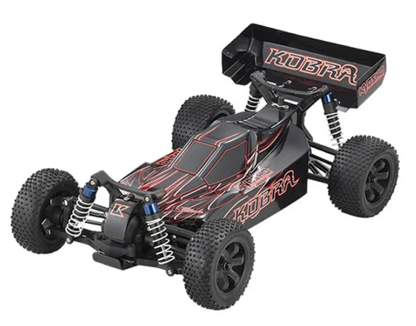

京商 EP Fazer Kobra

引用元画像：rcscrapyard.net
📋 基本情報
| メーカー | 京商（Kyosho） |
|---|---|
| 機種名 | EP Fazer Kobra |
| シャーシ略称 | EP Fazer Kobra |
| 型番 | 30930 |
| 発売時期 | 2010年 |
| 生産状況 | 生産終了 |
| カテゴリー | ラジコンカー（1/10スケール 電動バギー） |
| サブカテゴリー | 4WD 電動バギー（オフロード） |
| シリーズ | Fazer ReadySetシリーズ |
📏 シャーシスペック
| シャーシ | モールドプラスチックシャーシ |
|---|---|
| ベアリング | フルボールベアリング標準装備 |
⚙️ 駆動系
| 駆動方式 | シャフトドライブ4WD |
|---|---|
| デフギヤ | ギヤデフ |
| ドライブシャフト | ドッグボーンドライブシャフト |
| モーター | 540タイプ電動モーター（ReadySet標準装備） 推奨：ブラシレスモーター |
🔧 サスペンション
| 形式 | 4輪ダブルウィッシュボーン独立懸架 |
|---|---|
| ダンパー | コイルスプリングオーバーオイルダンパー×4本 |
💡 特徴
Fazerシリーズの電動4WDバギー
- 2010年発売、京商の電動オフロードバギー
- ReadySetモデルで開封後すぐに走行可能
- シャフトドライブ4WD方式で高い駆動効率
- フルボールベアリング標準装備で滑らかな動き
オフロード走行に最適な設計
- モールドプラスチックシャーシで軽量化
- ギヤデフで安定したトラクション
- 長ストロークオイルダンパーで高いギャップ吸収性
- ドッグボーンドライブシャフトで確実な動力伝達
- オフロードタイヤで荒地走行も可能
ReadySetモデルの利点
- R/Cユニット（送受信機）標準装備
- モーター・ESC標準装備
- バッテリー・充電器標準装備
- 初心者にも扱いやすいセット内容
- Kobraデザインの専用ボディ
🔧 ぽすとそに工房での修理実績
修理難易度
★★★★★（非常に困難）
生産終了とパーツ供給が少ないため、修理難易度が非常に高いです。
よくある故障・注意点
- オイルダンパーのオイル漏れ（オフロード使用で劣化が早い）
- ギヤデフの摩耗（砂や泥の侵入で摩耗加速）
- プラスチックシャーシのクラック（ジャンプ着地時）
- ドッグボーンドライブシャフトの摩耗（高負荷時）
- サスペンションアームの破損（激しい衝撃時）
- 電動モーターマウントのネジ緩み（振動で緩みやすい）
修理のポイント
- オフロード走行後は必ず清掃（砂・泥の除去が重要）
- オイルダンパーのO-リングは定期交換推奨
- ギヤデフは走行後にグリスアップで寿命延長
- プラスチックシャーシは慎重な取り扱いが必要
- 電動モーターマウントは定期的にネジの増し締めを
- パーツ入手困難のため、予防的メンテナンスが重要
- ブラシレスモーター換装時はパワーに注意
その他の特徴
- 2010年当時のReadySet電動バギー
- 希少性が高く、パーツ入手困難
- オフロード走行向けの設計
- 電動ならではの静粛性と扱いやすさ
- 初心者からベテランまで楽しめる性能